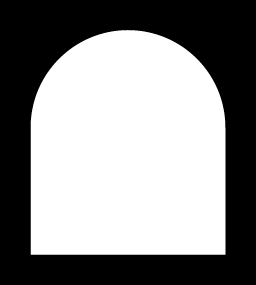

PROJECT:
The Landing, Riverfront Development
STATUS:
Construction Documentation
LOCATION:
Covington, Kentucky
The Landing is part of the Covington Central Riverfront redevelopment,
a 23-acre transformation of the former IRS site into a walkable,
mixed-use neighborhood that reconnects the city to the Ohio River.
Guided by the City’s strategic master plan, the project contributes to a
broader vision of a vibrant urban district that blends residential, retail,
and public spaces into a cohesive and pedestrian-oriented environment. This
phase of development introduces a compact urban block comprised of six
for-sale townhomes and a mixed-use condominium building with ground-floor
restaurant space. Together, these elements establish a dynamic streetscape
that supports a live-work-play environment, encouraging both daily use and
long-term community growth.
The townhomes reinterpret the scale and rhythm of Covington’s historic
rowhouses through a contemporary lens. Organized to prioritize the pedestrian
experience, vehicular access is located at the rear, allowing the street
frontage to remain active and residential in character. Each unit is structured
around an internalized entry courtyard, creating a spatial threshold between
public and private while drawing light deep into the home. Rooftop terraces
extend living spaces outward, offering elevated views of the river valley and
reinforcing a connection to the broader landscape. Anchoring the block, the
mixed-use condominium building strengthens the public realm through a
recessed ground floor that blurs the boundary between interior and exterior.
This gesture creates a generous threshold for the restaurant and retail spaces,
inviting engagement and extending the life of the street into the building.
Above, residential units are oriented to maximize natural light, views, and
access to outdoor space, with corner balconies and an expansive rooftop terrace
providing both individual and shared amenities .
Materially, the project draws from Covington’s architectural heritage while
expressing a distinctly contemporary identity. Brick masonry serves as the
primary cladding across all building types, complemented by refined detailing,
metal accents, and integrated landscape elements. This restrained palette
establishes continuity across the development while ensuring durability and
long-term value. As part of the larger redevelopment effort, The Landing
contributes to a renewed urban framework defined by walkability, mixed-use
density, and strong connections to the riverfront. The project reflects a
commitment to creating lasting civic and residential value through the
integration of architecture, landscape, and urban infrastructure, reinforcing
Covington’s evolution as a dynamic and livable city.
Team members involved include Federica von Euw, Andrew Tetrault,
Isaiah Zuercher, Cooper Kadish.
Credits: Schaefer (Structural Engineer), E2M Engineering (MEP Engineer),
Cardinal Engineering (Civil Engineer), Joy Mullappally (Visualization)